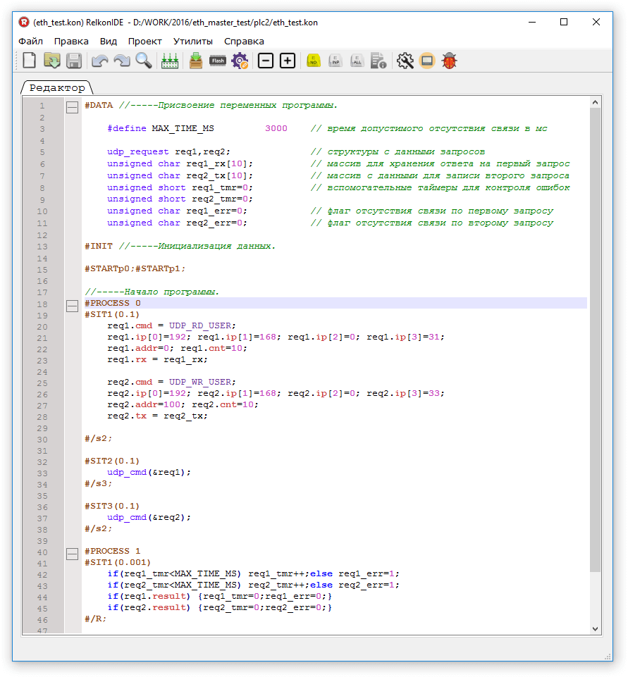

СТРУКТУРА ПРОГРАММЫ
ПЕРЕМЕННЫЕ И ДАНННЫЕ
АРИФМЕТИЧЕСКИЕ И ЛОГИЧЕСКИЕ ОПЕРАЦИИ. ОПЕРАТОРЫ ВЫБОРА
ОРГАНИЗАЦИЯ ЦИКЛОВ
ОБЪЯВЛЕНИЕ ПРОЦЕССОВ
ОБЪЯВЛЕНИЕ СИТУАЦИЙ
РАБОТА С ПУЛЬТАМИ
ДИСКРЕТНЫЕ И АНАЛОГОВЫЕ ВХОДЫ/ВЫХОДЫ
МОДУЛИ ВВОДА/ВЫВОДА СЕРИИ MATCHBOX
СИСТЕМНОЕ ВРЕМЯ КОНТРОЛЛЕРА
РАБОТА С FRAM
ЗАВОДСКИЕ УСТАНОВКИ
ПАМЯТЬ ПОЛЬЗОВАТЕЛЯ
РАСШИРЕННАЯ ПАМЯТЬ ПОЛЬЗОВАТЕЛЯ
КОНТРОЛЬ ЗАГРУЗКИ ПРОЦЕССОРА
ЗАРЕЗЕРВИРОВАННЫЕ СЛОВА
ПЕРЕСЧЁТ ДАННЫХ АЦП
РАБОТА С SD КАРТОЙ ПАМЯТИ
РАБОТА С ИНТЕРФЕЙСОМ RS485
МЕЖКОНТРОЛЛЕРНЫЙ ОБМЕН
ИНТЕРФЕЙСНЫЕ ПРОТОКОЛЫ
Протокол RKBIN
Протокол RKASCII
Поддерживаемые функции Modbus RTU, Modbus ASCII и Modbus TCP
Алгоритм расчёта контрольной суммы
СТРУКТУРА ПРОГРАММЫ
С точки зрения пользователя программа представляет собой набор параллельно работающих процессов. Каждый процесс разбивается на ситуации. Активной (выполняемой в данный момент времени) внутри процесса может быть только одна ситуация. Условия перехода между ситуациями формируются программой. Периодичность выполнения ситуаций и время перехода между ними гарантируется операционной системой контроллера и может составлять 1,5,10,100 мс.
Программа, написанная на языке Релкон (создан на базе Си), делится на 3 группы:
Переменные проекта объявляются между кодовых строк «#DATA» и «#INIT». Все объявленные здесь переменные являются глобальными и доступны для всех процессов. В этом поле возможно также объявление массивов, структур и макросов. При необходимости в поле инициализации можно присвоить объявленным ранее переменным стартовые значения. Здесь же определяются номера процессов, которые будут запущены при старте.
В последней группе располагается непосредственно текст программы.
В отличии от языка «Си», «Релкон» не позволяет пользователю создавать собственные функции. Частично их заменяют ситуации. Ниже приведён пример, иллюстрирующий описанную структуру .
#DATA
// Объявление переменных
#define AR_SIZE 100
unsigned char my_var;
unsigned short my_array[AR_SIZE];
#INIT
// Инициализация
my_var=0;
#STARTp0;
// Начало программы
#PROCESS 0
#SIT1(0.01)
my_array[my_var]=my_var;
my_var=my_var+1;
if(my_var>=AR_SIZE) my_var=0;
#/R;
Все переменные делятся на 2 типа: системные и пользовательские. Системные переменные входят в состав операционной системы контроллера и не требуют объявления в разделе «DATA». К ним относятся дискретные и аналоговые входы/выходы контроллера, переменные для работы с пультом, системные время и дата, заводские установки, счётчики ошибок модулей ввода/вывода серии MATCHBOX. Более подробно они описаны в соответствующих разделах. Пользовательские переменные создаются программистом
самостоятельно.
Память контроллера разделяется на типы:
- flash память программы
- оперативная память
- fram память
- память пользователя
- SD карта
Во flash памяти хранятся константы и выполняемая программа. Содержимое этой памяти не может быть изменено программой контроллера.
В оперативной памяти хранятся все переменные, объявленные пользователем. При пропадании питания контроллера все данные, хранящиеся в ней, сбрасываются.
FRAM память — энергонезависимая память. Может служить для хранения настроек работы автоматики, ведения архивов. Этот тип памяти более медленный по сравнению с оперативной, но её содержимое сохраняется даже при пропадании питания. Часть этой памяти зарезервирована операционной системой для хранения параметров контроллера и заводских установок.
Основное назначение SD карты — хранение больших объёмов архивных данных. Этот тип памяти существенно медленнее по сравнению с FRAM памятью.
Память пользователя представляет собой фрагмент оперативной памяти, зарезервированной контроллером. Её основное назначение — хранение данных, предназначенных для организации диспетчеризации. Переменные, хранящиеся в обычной оперативной памяти, могут менять свои адреса после компиляции проекта. Для того чтобы не настраивать адреса переменных, с которыми работает система диспетчеризации, каждый раз после изменения проекта и служит память пользователя.
В оперативной памяти могут быть объявлены переменные следующих типов:
| название | описание |
| unsigned char | однобайтовая беззнаковая |
| char | однобайтовая знаковая |
| unsigned short | двухбайтовая беззнаковая |
| short | двухбайтовая знаковая |
| unsigned long | четырёхбайтовая беззнаковая |
| long | четырёхбайтовая знаковая |
| float | четырёхбайтовая с плавающей запятой |
АРИФМЕТИЧЕСКИЕ И ЛОГИЧЕСКИЕ ОПЕРАЦИИ. ОПЕРАТОРЫ ВЫБОРА.
Арифметические операции :
- сложение a=b+c;
- вычитание a=b-c;
- умножение a=b*c;
- деление a=b/c;
- деление по модулю1 a=b%c;
- пост инкремент a++; (аналогично a=a+1;)
- пост декремент a--; (аналогично a=a-1;)
Операции отношения:
- больше или равно >=
- больше >
- меньше или равно <=
- меньше <
- проверка на равенство ==
- проверка на неравенство !=
Логические операции:
- логическое и &&
- логическое или ||
- отрицание !
Битовые операции:
- битовое и &
- битовое или |
- битовое исключающее или ^
- сдвиг влево <<
- сдвиг вправо >>
Математические операции:
- синус sin(x). Параметр x – переменная типа float (задаёт угол в радианах). Результат операции - переменная типа float.
- косинус cos(x). Параметр x – переменная типа float (задаёт угол в радианах). Результат операции - переменная типа float.
- возведение в степень pow(x,y). Возвращает переменную типа float – результат возведения переменной x в степень у.
- квадратный корень sqrt(x). Параметр x и результат операции — переменные типа float.
Операторы выбора:
- if(условие) {набор команд 1} else {набор команд 2}
if(a>=b) {c=a;} else {c=b;}
Переменной c присваивается значение наибольшей переменной из переменных a,b.
- (выражение 1)?(выражение 2):(выражение 3)
- c=(a < b)?a:b;
Не допускается в качестве оператора выбора использовать оператор switch если внутри него используются переходы по ситуациям.
Для организации циклических процессов не рекомендуется использовать такие операторы языка Си как FOR, WHILE, DO-WHILE. Их неаккуратное применение (если время обработки цикла превышает период ситуации) может вызвать разрушение режима реального времени операционной системы и как следствие - к перезапуску контроллера.
При необходимости можно использовать цикличность выполнения ситуаций.
Процесс — обособленная часть программы, отвечающая за какие-либо действия. Активные процессы выполняются параллельно. Количество процессов произвольное. Но следует учитывать, что с ростом числа процессов увеличивается нагрузка на контроллер и кроме того, на организацию каждого процесса расходуется 8 байт оперативной памяти. Объявляется процесс в теле программы строкой #PROCESS n, где n – номер процесса. Запрещается создавать процессы с одинаковыми номерами. Запуск процесса осуществляется командой #STARTp<номер процесса>;. Хотя бы один процесс должен быть запущен при старте программы (в блоке инициализации #INIT). Процесс может быть остановлен командой #STOPp<номер процесса>. При старте процесса управление передаётся первой ситуации.
Ситуация — составная часть процесса. Весь процесс представляет из себя набор ситуаций. В любой момент времени в каждом процессе активна только одна ситуация. Ситуации объявляются следующим образом: #SIT<номер ситуации>(<период ситуации>)
номер ситуации — целое число
период ситуации — время в секундах, определяющее периодичность вызова ситуации к исполнению. Период ситуации может принимать любое значение из ряда [0.001, 0.005, 0.01, 0.1] (1, 5, 10 и 100 мс).
По завершении работы операции возможен возврат на её начало (оператор #/R;) или переход на другую ситуацию (оператор #/s<номер ситуации>;). В обоих случаях переход произойдёт только через время, указанное в периоде ситуации. Для организации задержки более чем на 100 мс можно воспользоваться оператором перехода с задержкой (#/<t>/R; или #/<t>/s<номер ситуации>;), где t – время задержки в секундах в интервале [0...4000000]. В этом случае в расчёт берётся именно время задержки, а не период ситуации.
Контроллеры допускают подключение пультов в формате 4 строки по 20 символов. В среде программирования с помощью специальной утилиты заранее формируются тексты строковых сообщений, задаётся расположение и тип переменных, отображаемых на дисплее. Программа управляет лишь номером активной в данный момент строки. Для работы со строками предусмотрены системные переменные st1, st2, st3, st4. Они соответственно определяют номера активной первой, второй, третьей и четвёртой строк. На уровне операционной системы заложена прокрутка четвёртой строки кнопками «вправо» и «влево» (в случае если её номер не заблокирован программой). Это позволяет размещать в ней настроечные параметры для программы автоматики. Номер нажатой на пульте кнопки записывается в переменную key. Каждой кнопке соответствует один бит переменной. Младший бит (key=1) соответствует кнопке «F1», старший (key=128) — кнопке «F2».
Возможно и побитовое обращение: key_1, key_2, …, key_8. Key_1 соответствует младшему биту переменной key (F1), key_8 – старшему (F2).
| Номер бита | 7 | 6 | 5 | 4 | 3 | 2 | 1 | 0 |
| Значение переменной key | 128 | 64 | 32 | 16 | 8 | 4 | 2 | 1 |
| Название кнопки | F2 | SHIFT | вниз | ввод | вправо | вверх | влево | F1 |
Кнопка «F2», нажатая в момент подачи питания на контроллер переводит его в принудительный режим программирования. Если в течение 30 секунд процесс программирования не старотовал контроллер автоматически перезапускается.
Для доступа к светодиодам пульта служат переменные led (одновременное управление всеми 8 светодиодами), led_1, led_2, led_3, ..., led_8 (для управления отдельными светодиодами). В режиме редактирования переменных нажатия кнопок не записываются в переменную key. До тех пор пока редактирование не будет завершено она будет равна нулю. Для редактирования не доступны переменные с плавающей запятой (float).
Вход в режим редактирования переменной выполняется одновременным нажатием клавиш «shift» и «ввод». Если при этом на дисплее имеются переменные для которых не установлен флаг «только чтение», напротив младшего разряда первой обнаруженной переменной появится мигающий курсор. Перемещение курсора по разрядам числа и между переменными выполняется кнопками «влево» и «вправо». Кнопки «вверх» и «вниз» соответственно увеличивают и уменьшают значение редактируемой переменной. Кнопка «ввод» подтверждает изменения и завершает процесс редактирования. Выход из режима без сохранения - повторное нажатие кнопок «shift» и «ввод».
ДИСКРЕТНЫЕ И АНАЛОГОВЫЕ ВХОДЫ/ВЫХОДЫ
На уровне операционной системы контроллеры поддерживают 32 базовых дискретных входа, 32 базовых дискретных выхода, 16 дополнительных дискретных входов, 16 дополнительных дискретных выходов. Дискретные входы/выходы разбиты на группы по 8 штук(один байт соответствует восьми входам/выходам), каждой из которых соответствует системная переменная:
- базовые дискретные входы : IN0, IN1, IN2, IN3
- базовые дискретные выходы: OUT0, OUT1, OUT2 , OUT3
- дополнительные дискретные входы: DIN4, DIN5
- дополнительные дискретные выходы DOUT4, DOUT5.
Первый вход/выход группы соответствует младшему биту в переменной.
Для битовых операций с входами/выходами в языке «Релкон» предусмотрен специальный формат данных:
- #IN<номер байта>.<номер бита>
- #DIN<номер байта>.<номер бита>
- #OUT<номер байта>.<номер бита>
- #DOUT<номер байта>.<номер бита>
- #IN0.0 – соответствует первому биту первого байта дискретных входов,
- #OUT3.5 – шестому биту четвёртого байта дискретных выходов и т.п.
Для работы с аналоговыми входами используются системные переменные:
ADC1, ADC2, ADC3, ADC4, ADC5, ADC6, ADC7, ADC8
ADH1, ADH2, ADH3, ADH4, ADH5, ADH6, ADH7, ADH8
Переменные ADC содержат в себе 12-разрядное цифровое значение, сдвинутое на 4 бита в сторону старших разрядов. Они могу принимать значение от 0 (соответствует току 0 мА) до 65535 (20 мА). Возможное использование системных переменных AI1,...,AI8. В отличие от переменных ADC данные сдвинуты в сторону младших разрядов (диапазон от 0 до 4095). Переменные ADH применяются в случае когда достаточно точности 8 разрядов. Они могут принимать значения от 0 (0 мА) до 255 (20 мА).
Для работы с аналоговыми выходами используются системные переменные: DAC1, DAC2. Также как и ADC они являются 12 разрядными, сдвинутыми в сторону старших разрядов. Точность преобразования гарантируется только в диапазоне 4...20 мА (значение DAC, равное 0 соответствует 0 мА, 65535 — 20 мА).
Следует помнить, что если в контроллере включен режим эмуляции аппаратное состояние входов контроллера будет игнорироваться программой. Это утверждение относится и к выходам контроллера (в режиме полной эмуляции).
МОДУЛИ ВВОДА/ВЫВОДА СЕРИИ MATCHBOX
Контроллеры допускают подключение расширения входов/выходов в виде модулей ввода/вывода серии Matchbox по интерфейсу RS-485. Каждому модулю дискретного ввода/вывода в зависимости от его адреса соответствует системная переменная:
IN4, IN5, … , IN35 – для модулей дискретного ввода;
OUT4, OUT5, … , OUT35 – для модулей дискретного вывода.
Значащими в этих переменных являются 4 младшие бита (модули содержат не более 4 дискретных входов/выходов). Допускается работа не только с байтами, но и с отдельными битами модулей: #IN4.1 – второй вход модуля IN4, #OUT10.3 – четвёртый вход модуля OUT10.
Модули аналогового ввода серии Matchbox могут включать в себя до 4-х аналоговых входов. В этом случае каждому модулю соответствует уже 4 системных переменных:
ADC9, ADC10, ADC11, ADC12 – для модуля ADC9...12;
ADC13, ADC14, ADC15, ADC16 – для модуля ADC13...16;
…
ADC133, ADC134, ADC135, ADC136 – для модуля ADC133...136.
Каждый модуль аналогового вывода содержит 2 аналоговых выхода, которые связаны с двухбайтовыми переменными:
DAC5, DAC6 – модуль DAC5_6;
DAC7, DAC8 – модуль DAC7_8;
…
DAC67, DAC68 – модуль DAC67_68.
Опрос модулей происходит по интерфейсу RS-485 внутренним протоколом RKFAST. Следует помнить, что контроллер опрашивает лишь те модули, которые присутствуют в коде программы. Поэтому время опроса модулей может меняться в зависимости от программы. Для контроля исправности модулей имеется системная переменная Sum_err. При неправильном ответе любого модуля или при отсутствии ответа, её значение увеличивается на единицу. Эта переменная показывает общее состояние сети. Sum_err может принимать значения от 0 до 65535. При переполнении отсчёт начинается с нуля. Помимо этого существует аналогичный счётчик ошибок для каждого модуля:
E<название модуля>
EIN4 – переменная контроля ошибок модуля IN4;
EADC9 – модуля ADC9...13;
EADC11 – модуля ADC9...13;
EOUT17 – модуля OUT17;
EDAC6 – модуля DAC5_6.
Эти переменные также будут увеличиваться на единицу при обнаружении ошибки опроса модуля. Но при каждом корректном ответе счётчик будет сбрасываться в ноль. В случае отсутствия связи с модулем счётчик ошибок доходит до 100 и останавливается.
Если необходимо программно отключить опрос модуля (например, в случае, если программа, в зависимости от настроек, работает с различным числом модулей), переменной контроля ошибок соответствующего модуля необходимо присвоить значение, превышающее 100.
Операционная система содержит встроенные средства диагностики модулей ввода/вывода серии Matchbox. Диагностическая информация может отображаться на дисплее в сервисном меню. Вызов сервисного меню выполняется нажатием комбинации кнопок «shift» и «F2». В верхней строке выводится информация о текущей и максимальной загрузке процессора (в процентах) и общий счётчик ошибок Sum_err. В остальных строках выводятся данные по конкретным модулям (название модуля: счётчик ошибок). Напротив названия модуля отображается символ «+» или «-», в зависимости от того опрашивается модуль контроллером или нет. Прокрутка строк выполняется кнопками «вверх» и «вниз». Кнопки «влево» и «вправо» служат для ускоренного перемещения между группами модулей (IN, OUT, ADC, DAC). Кнопка «F1» сбрасывает общий счётчик ошибок в ноль. Кнопка «ввод» отображает данные о версии операционной системы, работающей в контроллере. Возврат в обычный режим осуществляется повторным нажатием «shift» и «F2».
Для работы с временными параметрами предусмотрены системные структуры times и wr_times. В их состав входят следующие переменные:
times.sec / wr_times.sec – секунды
times.min / wr_times.min – минуты
times.hour / wr_times.hour – часы
times.date / wr_times.date – число
times.month / wr_times.month – месяц
times.year/ wr_times.year - год
Переменные структуры times доступны для вывода на пульт. Если разрешено их редактирование, то изменение этих переменных с пульта приведёт к изменению системного времени. Для чтения текущего времени из программы достаточно обратиться к этим переменным.
Структура wr_times служит для корректировки времени из программы. В неё записываются необходимые временные параметры, а затем вызывается функция set_time(). Для правильной установки времени необходимо присвоить значения всем полям структуры wr_times.
В приведённых выше структурах отсутствуют параметры, задающие год и день недели. Не учитываются високосные года и переход на летнее и зимнее время.
FRAM - энергонезависимая память, сохраняющая своё состояние и после пропадания питания. Объём памяти доступной в контроллере — 32 кБайт. Часть этого пространства используется для хранения заводских установок и системных настроек, т.е. зарезервирована операционной системой контроллера. Эта область располагается в конце памяти по адресам 0x7B00...0x7FFF. В распоряжении пользователя находится память в диапазоне 0x0000...0x7AFF1. Это более 30 кБайт данных.
Чтение данных выполняется функцией read_fram(Adr,Size,Ptr),
где Adr – начальный адрес (переменная типа unsigned short);
Size – количество байт для чтения (переменная типа unsigned char; должна быть в диапазоне от 1 до 128 включительно);
Ptr – указатель на массив или переменную, куда будет выполнено сохранение данных (адрес в памяти контроллера).
Ниже приведён пример чтения из FRAM 10 байт в массив my_array, начиная с адреса 0x00 и чтение ячейки по адресу 0x80 в однобайтовую переменную my_var.
#DATA
// Объявление переменных
#define AR_SIZE 100
unsigned char my_var;
unsigned short my_array[AR_SIZE];
#INIT
// Инициализация
#STARTp0;
// Начало программы
#PROCESS 0
#SIT1(0.1)
read_fram(0x00,10,my_array);
read_fram(0x80,1,&my_var);
#/R;
Для записи FRAM памяти используется функция write_fram(Adr,Size,Ptr). Параметры этой функции аналогичны параметрам функции read_fram, за тем исключением, что Ptr указывает на переменную или массив откуда будут браться данные для записи в память. Работа с FRAM памятью выполняется медленнее, чем с оперативной. Поэтому функции read_fram и write_fram необходимо вызывать только из ситуаций, работающих в 100 мс цикле.
Заводские установки располагаются в системной области FRAM памяти. Они позволяют облегчить работу с настройками контроллера. Под заводские установки зарезервировано 1024 байта. При включении контроллер считывает из FRAM памяти все установки и отображает их на область оперативной памяти. Это связано с тем, что быстродействие оперативной памяти выше. Для обращения к этому слепку заводских установок используются системные макросы:
- EE_1(x1)
- EE_2(x2)
- EE_4(x3),
EE_1 представляет память как 1024 однобайтовых переменных и соответственно x1 может принимать значения от 0 до 1023.
EE_2 разбивает область установок на 512 двухбайтовых переменных (x2 в диапазоне от 0 до 511).
EE_4 используется если необходимы четырёхбайтовые переменные (x3 в диапазоне от 0 до 255).
Следует помнить, что эти области перекрываются между собой. Например EE_4(0) занимает то же пространство, что и совокупность переменных EE_1(0), EE_1(1), EE_1(2), EE_1(3). Допускается также следующий вариант обращения к заводским установкам:
EE0, EE1, EE2, EE3, EE4, … - для однобайтовых;
EE0i, EE2i, EE4i, EE6i, EE8i, … - для двухбайтовых;
EE0l, EE4l, EE8, EE12l, EE16l, … - для четырёхбайтовых.
При редактировании заводских установок с пульта меняется содержимое как оперативной памяти, так и соответствующей ей области FRAM памяти. Однако, если в программе присвоить переменной EE какое-либо значение, то это приведёт лишь к изменению оперативной памяти, не повлияв на FRAM. В этом случае необходимо воспользоваться функцией write_fram. Заводские установки хранятся в FRAM в диапазоне 0x7B00...0x7EFF, где 0x7B00 связан с переменной EE_1(0)1, а 0x7EFF — с переменной EE_1(1023).
Память пользователя ограничена размером в 256 байт. Для обращения к ней используются системные перменные mem0,mem1,mem2,mem3,...,mem255 (однобайтные беззнаковые), memoi, mem2i, mem4i, mem6i, ... , mem254i (двухбайтовые беззнаковые), mem0l, mem4l, mem8l, mem12l, ... , mem252l (четырёхбайтовые знаковые), и mem0fl, mem4fl, mem8fl, mem12fl, ... , mem252fl (четырёхбайтовые с плавающей запятой). Основное назначение памяти пользователя — облегчение доступа к данным контроллера для систем диспетчеризации. Возможно обращение к данной памяти по интерфейсам RS485 и/или Ethernet по протоколу Modbus (RTU/ASCII/TCP) как к HOLDING регистрам (см. описание протокола Modbus) в диапазоне адресов [0...127].
РАСШИРЕННАЯ ПАМЯТЬ ПОЛЬЗОВАТЕЛЯ
Расширенная память пользователя (emem) представляет собой массив двухбайтных беззнаковых переменных размерность которого (от 10 до 1000) задаётся в настройках проекта (в среде разработке). Возможно обращение к данной памяти по интерфейсам RS485 и/или Ethernet по протоколу Modbus (RTU/ASCII/TCP) как к HOLDING регистрам (см. описание протокола Modbus) начиная со 128 адреса (переменная emem[0] соответствует holding регистру с адресом 128). Верхняя граница диапазона зависит от размерности массива.
Системные переменные _SysRealTmr и maxload позволяют контролировать текущую и максимальную (с момента подачи питания) степень загруженности контроллера. Они высчитываются операционной системой и могут принимать значения от 0 до 1000, где 1000 соответствует стопроцентной загрузке. Эти же данные (только в процентах) выводятся в диагностическом меню на пульте (вход/выход выполняется нажатием комбинации кнопок «shift» и «F2»).
Ниже в таблице приведён перечень зарезервированных слов. Не допускается использовать их в тексте программы для объявления переменных.
| _Sys | adc_sum | OUT | st2 |
| _Sys_ADC | c1_n | r1 | st3 |
| _Sys_DAC | err_mod | r5 | st4 |
| _Sys_IN | IN | r10 | Sum_err |
| _Sys_OUT | IO_DEF | r100 | times |
| _SysKey | key | sd_addr | wr_times |
| _SysRealTmr | led | sd_buf | Z40 |
| _ADC | max_load | sd_stat | Z50 |
| _DAC | month_sec | st1 |
Если аналоговый датчик реализует линейную зависимость тока от измеряемого параметра, то её можно описать функцией y=k*x+b, где x-данные АЦП, y – непосредственно измеряемый параметр (температура, давление, …), k и b – постоянные величины. Зная две любые точки зависимости (например значение температуры при 4 мА и при 20 мА) можно вычислить константы k и b.
y1=k*x1+b
y2=k*x2+b
k=(y2-y1)/(x2-x1)
b=y1-k*x1
Току 4 мА соответствует значение переменной (ADC>>4)1 – 819; 20 мА — 4095.
Для датчика температуры 0...200 ° С (4...20 мА) :
k=(200-0)/(4095-819)=200/3276=50/819.
b=0-(50/819)*819=-50.
T=(50*(ADC>>4))/819-50.
Вместо ADC>>4 можно допускается использовать переменную AI. Перед умножением переменную ADC рекомендуется принудительно преобразовать к типу unsigned long или float, чтобы в результате умножения не возникло переполнения. Если необходимо учитывать знаки после запятой, результирующую переменную (в данном примере T) нужно объявить как float.
T=(50*(unsigned long)(ADC1>>4))/819-50; или T=(50*(unsigned long)AI1)/819-50;
Аналогичным образом можно получить формулу для датчика температуры -50...50 ° С .
T=(25*(unsigned long)(ADC1>>4))/819-75; или T=(25*(unsigned long)AI1)/819-75;
Для управления картой памяти служит системная переменная sd_stat. При запуске контроллера её значение равно нулю. Независимо от того используется карта памяти или нет выполняется попытка её инициализации. Если SD карта обнаружена и успешно инициализирована переменная sd_stat примет значение, равное 5 (значению 5 соответствует системный макрос INIT_COMPL). Запись и чтение в карту памяти выполняется только постранично. Размер страницы составляет 512 байт. Адрес страницы указывается в переменной sd_addr. Его максимальное значение зависит от размера карты (1 килобайт включает две страницы). Результат чтения содержится в буфере sd_buf (512 переменных типа unsigned char). В него же подставляются необходимые данные в случае записи. Для чтения карты переменной sd_stat необходимо присвоить 2 (или системный макрос CMD_RD). Если чтение будет выполнено без ошибок sd_stat примет значение 6 (макрос RD_COMPL). Для записи данных в карту переменной sd_stat необходимо присвоить 7 (макрос CMD_WR). После успешной записи sd_stat станет равна 9 (макрос WR_COMPL). В случае ошибок при чтении или записи автоматически предпринимается до 5 повторных попыток. Если они все оказались безуспешными выполняется переинициализация SD карты. Ниже приведён пример чтения/записи SD карты памяти.
#DATA
// Объявление переменных
unsigned char wr_var1,wr_var2;
unsigned short wr_var3;
unsigned char rd_var1,rd_var2;
unsigned short rd_var3;
#INIT
// Инициализация
#STARTp0;
wr_var1=100;wr_var2=200;wr_var3=10000;
// Начало программы
#PROCESS 0
#SIT1(0.1)
if(sd_stat==INIT_COMPL) #/s2;
#/R;
#SIT2(0.1)
sd_addr = 0;
sd_buf[0]=wr_var1;
sd_buf[1]=wr_var2;
sd_buf[2]=wr_var3>>8;
sd_buf[3]=wr_var3&0xFF;
sd_stat=CMD_WR;
#/s3;
#SIT3(0.1)
if(sd_stat!=WR_COMPL) #/s6;
sd_addr=0;
sd_buf[0]=sd_buf[1]=sd_buf[2]=sd_buf[3]=0;
sd_stat=CMD_RD;
#/s4;
#SIT4(0.1)
if(sd_stat!=RD_COMPL) #/s6; rd_var1=sd_buf[0];rd_var2=sd_buf[1];
rd_var3=(((unsigned short)sd_buf[2])<<8) | sd_buf[3];
#/s5;
SIT5(0.1)
// Данные успешно записаны и прочитаны
#/R;
#SIT6(0.1)
// Ошибка чтения или записи
sd_stat=CMD_INIT;
#/s1;
Стандартные макросы, применяемые в функциях:
номер канала
В языке Релкон доступны следующие функции для работы с каналом:
Запрет стандартного протокола канала:
Необходим при использовании канала в режиме мастераcan_disable(unsigned char num);
num – номер канала (CAN_PC, CAN_PR, CAN_MB)
примеч.: запрет протокола на канале программирования приведёт к невозможности последующей перепрошивки контроллера без внешнего пульта (ПУ134 — необходим для принудительного запуска режима программирования
Следует помнить, что через канал PROG выполняется программирование контроллера и если запретить стандартный протокол, то контроллер не сможет автоматически перейти в режим программирования по внешним запросам от среды программирования. В этом случае перейти в режим программирования необходимо вручную, используя кнопку «F2» (более подробно см. описание работы с пультами).
Разрешение стандартного протокола канала:
Канал контроллера автоматически отвечает на запросы по протоколуcan_enable(unsigned char num);
num – номер канала
примеч.: по умолчанию стандартные протоколы (RK BIN/ASCII,Modbus RTU/ASCII) разрешены.
Указатель на передающий буфер канала
Возвращает адрес буфера передачиunsigned char* get_can_tx_ptr(unsigned char num);
num – номер канала
примеч.: размерность буферов для всех каналов — 512 байт
unsigned char* tx_buf;
tx_buf = get_can_tx_ptr(CAN_PC);
tx_buf[0]='T';
tx_buf[1]='e';
tx_buf[2]='s';
tx_buf[3]='t';
Указатель на приёмный буфер канала
Возвращает адрес буфера приёмаunsigned char* get_can_rx_ptr(unsigned char num);
num – номер канала
примеч.: размерность буферов для всех каналов — 512 байт
unsigned char* rx_buf;
rx_buf = get_can_rx_ptr(CAN_PC);
Количество байт данных в приёмном буфере
Возвращает количество принятых каналом байт данныхunsigned short get_rx_cnt(unsigned char num);
num – номер канала
Сброс приёмного буфера
Обнуляет счётчик принятых байт каналаvoid clear_rx_cnt(unsigned char num);
num – номер канала
Очистка буфера
Сбрасывает счётчик принятых байт буфера и обнуляет его содержимоеclear_buf(unsigned char num)
num - номер канала примеч.: работает только для каналов PC и PR.
Отправка данных
Посылает данные из буфера в каналvoid send(unsigned char num,unsigned char* ptr, unsigned short cnt);
num – номер канала
ptr – указатель на внешний буфер типа unsigned char
cnt – количество байт для отправки
unsigned char my_tx[10];
my_tx[0]=0x01;
my_tx[1]=0xA0;
my_tx[2]=0x00;
my_tx[3]=0x58;
send(CAN_PC,my_tx,4);
Отправка строки
Посылает строку в каналvoid send_str(unsigned char num,char* ptr);
num – номер канала
ptr – указатель на внешний буфер, содержащий строку
send_str(CAN_PC,"AT+CREG?\r\n");
Поиск строки в приёмном буфере
Возвращает результат поиска строки в приёмном буфере(1 – найдена, 0 — не найдена)char search(unsigned char num,unsigned char* ptr);
num – номер канала
ptr – указатель на строку
примеч.: признаком окончания строки является нулевой символ
if(search(CAN_PC,”OK”)) #OUT0.0=1;else #OUT0.0=0;
Отправка стандартных команд
Позволяет послать в передающий буфер некоторые команды протоколов RKBIN,RK51BIN,RK51ASCII и MODBUS RTU.void can_cmd(request* r);
r – указатель на структуру типа request
struct
{
unsigned char canal;
unsigned char cmd;
unsigned char plc_addr;
unsigned short mem_addr;
unsigned short amount;
unsigned char* rx;
unsigned char* tx;
}request;
canal – номер каналаcmd – код команды
plc_addr – сетевой адрес контроллера, к которому обращён запрос
mem_addr – начальный адрес памяти, к которой обращён запрос
amount – количество байт (или регистров - для протокола Modbus) для чтения/записи
rx – указатель на буфер, в котором будет сохранён ответ(присваивается автоматически операционной системой контроллера)
tx – указатель на буфер с данными для записи
Поддерживаемые типы команды (cmd):
Примеры запросов:
Чтение первых 2 байт из области стандартных входов/выходов контроллера с первым сетевым адресом (IN0,IN1)
request req;
req.canal = CAN_PC;
req.cmd = RD_IO;
req.plc_addr = 1;
req.mem_addr=0;
req.amount = 2;
can_cmd(&req);
Чтение 8 байт расширенной оперативной памяти из контроллера на базе AT89C51ED2 (сетевой адрес контроллера — 2, адрес ячейки памяти 0x600)
request req;
req.canal = CAN_PC;
req.cmd = RD_XRAM51;
req.plc_addr = 2;
req.mem_addr=0x600;
can_cmd(&req);
Для данной команды количество байт фиксировано и всегда равно 8. Это обусловлено особенностью протокола RK51BIN.
Чтение 100 байт памяти пользователя с нулевого адреса (сет. адрес контр. - 5)
request req;
req.canal = CAN_PC;
req.cmd = RD_US;
req.plc_addr = 5;
req.mem_addr=0;
req.amount = 100;
can_cmd(&req);
Запись трёх байт в память пользователя контроллера на базе CORTEX
#DATA
// Присвоение переменных программы.
request req;
unsigned char tx_data[3]={0x03,0x02,0x04};
#INIT
#STARTp0;
//-----Начало программы.
#PROCESS 0
#SIT1(0.1)
req.canal = CAN_PC;
req.cmd = WR_US;
req.plc_addr = 1;
req.mem_addr=0;
req.amount = 3;
req.tx = tx_data;
can_cmd(&req);
#/1.0/R;
Проверка ответа на стандартные команды чтения
Возвращает результат проверки ответа на ранее сформированный запрос (1 — ответ корректный, 0 — ошибка)char can_check(request* r);
r – указатель на структуру типа request
Примеч.: Функция can_check должна вызываться с паузой после отсылки команды can_cmd, необходимой для надёжного принятия ответа
Пример:
request req;
unsigned char var1,var2; // переменные, в которых сохраняется результат
unsigned short err_cnt=0; // счётчик ошибок
req.canal = CAN_PC;
req.cmd = RD_XRAM51;
req.plc_addr = 2;
req.mem_addr=0x600;
can_cmd(&req);
// пауза — 0,5 секунды
if(can_check(&req))
{
var1 = req.rx[0];
var2 = req.rx[1];
err_cnt=0;
}else err_cnt++;
КОМАНДЫ РАБОТЫ С МОДЕМОМ
Работу с модемом можно организовать, используя ранее описанные функции send, send_str и search. Но для удобства некоторые стандартные команды оформлены в виде функций.
Набора номера в голосовом режиме
Аналогична выполнению команды модема ATD в голосовом режимеcall(unsigned char can, unsigned char* num);
num – указатель на массив, содержащий номер телефона. Признак окончания номера нулевой символ.
call(CAN_PC,”12345”);
Набора номера в режиме передачи данных
Аналогична выполнению команды модема ATD в режиме CSDcall_data(unsigned char can, unsigned char* num);
num – указатель на массив, содержащий номер телефона. Признак окончания номера нулевой символ.
call_data(CAN_PC,”12345”);
Набора номера (с автоматическим добавлением к началу "+7") в голосовом режиме
Аналогична выполнению команды модема ATD в голосовом режимеcall7(unsigned char can, unsigned char* num);
num – указатель на массив, содержащий номер телефона. Признак окончания номера нулевой символ.
call7(CAN_PC,”9209170680”);
Набора номера (с автоматическим добавлением к началу "+7") в режиме передачи данных
Аналогична выполнению команды модема ATD в режиме CSDcall_data7(unsigned char can, unsigned char* num);
num – указатель на массив, содержащий номер телефона. Признак окончания номера нулевой символ.
call_data7(CAN_PC,”9209170680”);
Отправка заголовка SMS
Формирует заголовок, необходимый для отправки SMS.write_head(unsigned char can);
can – номер канала
Отправка тела SMS
Формирует содержимое для отправки SMS.send_sms(unsigned char can, unsigned char* num, unsigned char* data);
can – номер канала
num - указатель на буфер с номером получателя
data - указатель на буфер с содержимым сообщения
Номер должен быть стандартным 11-значным, но без «8» или «+7». Функция должна вызываться спустя как минимум пол секунды после команды write_head(). Длина сообщения не должна превышать 70 символов.
#DATA
#INIT
#STARTp0;
//-----Начало программы.
#PROCESS 0
#SIT1(0.1)
write_head(2);
#/0.5/s2;
#SIT2(0.1)
send_sms(CAN_PC,”9209170680”,”Тестовое сообщение”);
#/s3;
#SIT3(0.1)
#/R;
Если в качестве буфера для текста смс используется массив в оперативной памяти, то возможна вставка значений переменных типа unsigned char,unsigned short и unsigned long в текст сообщения с помощью функции print_long_buf().
unsigned char print_long_buf(unsigned long val,unsigned char* buf);
val - значение переменной
buf – указатель на элемент буфера, с которого начнётся вывод переменной
Функция возвращает количество затраченных знакомест в буфере
Старшие незначащие символы при этом не выводятся. Число 23, например, будет выведено как «23», а не «00023». Функция вернёт при этом значение 2, так как для вывода числа необходимы 2 символа.
unsigned char my_buf[] = "Текущее время: : : ";
#SIT2(0.1)
print_long_buf(times.hour,&my_buf[14]);
print_long_buf(times.min,&my_buf[17]);
print_long_buf(times.sec,&my_buf[20]);
write_head(CAN_PC);
#/0.5/s3;
#SIT3(0.1)
send_sms(CAN_PC,"9209170680",my_buf);
#/s4;
#SIT4(0.1)
#/R;
В этом примере в сообщении высылается текущее время контроллера.
Приём входящих текстовых сообщений (работает только на каналах PC и PR)
В Релкон встроен ряд функций, позволяющих принимать и обрабатывать входящие SMS. Приём сообщений имеет несколько особенностей. Во первых, доступны только сообщения, начинающиеся с шестизначного пароля, известного программе. Для установки пароля необходимо воспользоваться функцией set_password().void set_password(unsigned char* ptr);
ptr – указатель на буфер, содержащий пароль
Пример вызова функции: set_password("Релкон");
Пароль достаточно указать один раз при старте программы. Другой особенностью является необходимость принудительно очистить несколько ячеек памяти модема для приёма SMS, поскольку в противном случае может возникнуть ситуация когда приходящим сообщениям некуда будет сохраняться. Для этого во время инициализации модема необходимо выполнить несколько команд AT+CMGD (более подробно смотри справку по AT командам). Третий важный момент — необходимо разрешить индикацию входящих сообщений командой AT+CNMI=2,1. При приёме SMS модем будет выдавать сообщение вида +CMTI:. Отслеживая его можно приступить к обработке принятого сообщения.
Обработка SMS проходит в несколько этапов:
1) Получение номера ячейки памяти, содержащей sms
unsigned char sms_i;
sms_i = get_index(CAN_PC);
2) Очистка приёмного буфера и чтение SMS
clear_buf(CAN_PC);
Параметр sms_i содержит индекс ячейки памяти, полученный ранее с помощью команды get index().
read_sms(CAN_PC,sms_i);
3) Сохранение текста сообщения в памяти контроллера
#define SMS_L (70-6)
unsigned char sms_txt[SMS_L];
for(j=0;j<SMS_L;j++) sms_txt[j]=0;
j=get_sms_text(CAN_PC,sms_txt,SMS_L);
Шесть символов зарезервированы под пароль. Поэтому под сообщение выделяется 70-6 символов. Функция get_sms_text сохраняет сообщение в буфер sms_txt и возвращает количество прочитанных символов.
Для поиска подстроки в сохранённом буфере можно воспользоваться функцией find.
unsigned char find(unsigned char* str,unsigned char* buf, unsigned short l);
Ищет подстроку str в первых l символах буфера buf.
j=get_sms_text(CAN_PC,sms_txt,SMS_L);
if(j)
{
if(find("вкл",sms_txt,SMS_L)) #OUT0.0=1;
if(find("выкл",sms_txt,SMS_L)) #OUT0.0=0;
}
4) Очистка приёмного буфера и удаление SMS из памяти модема
clear_buf(CAN_PC);
del_sms(CAN_PC,sms_i);
Параметр sms_i содержит индекс ячейки памяти, полученный ранее с помощью команды get index().Ниже приведён пример программы, иллюстрирующий разбор входящих сообщений.
#DATA
// Присвоение переменных программы.
#define SMS_L (70-6)
unsigned char modem_stat=0;
unsigned short modem_tmr=0;
unsigned char sms_i;
unsigned char j;
unsigned char sms_txt[SMS_L];
#INIT
#STARTp0;
//-----Начало программы.
#PROCESS 0
#SIT1(0.1)
switch(modem_stat)
{
case 0:
send_str(CAN_PC,"AT\r\n");
modem_stat++;break;
case 1:
if(search(CAN_PC,"OK")) {modem_stat++;modem_tmr=0;}
else modem_stat=0;break;
case 2:
send_str(CAN_PC,"AT+CREG?\r\n");
modem_stat++;break;
case 3:
if((search(CAN_PC,",1"))||(search(CAN_PC,",5")))
{modem_stat++;} else modem_stat=2;break;
case 4:
send_str(CAN_PC,"AT+CMGD=1\r\n");
modem_stat++;modem_tmr=0;break;
case 5:
modem_tmr++;
if(modem_tmr>=10) {modem_tmr=0;modem_stat++;}
break;
case 6:
send_str(CAN_PC,"AT+CMGD=2\r\n");
modem_stat++;modem_tmr=0;break;
case 7:
modem_tmr++;
if(modem_tmr>=10) {modem_tmr=0;modem_stat++;}
break;
case 8:
send_str(CAN_PC,"AT+CMGD=3\r\n");
modem_stat++;modem_tmr=0;break;
case 9:
modem_tmr++;
if(modem_tmr>=10) {modem_tmr=0;modem_stat++;}
break;
case 10:
send_str(CAN_PC,"AT+CNMI=2,1\r\n");
modem_stat++;break;
case 11:
if(search(CAN_PC,"OK")) {modem_stat++;}
else modem_stat--;break;
case 12:break;
}
if(modem_stat==12)
{
set_password("Релкон");
#/1.0/s2;
}
#/R;
#SIT2(0.1)
if(search(CAN_PC,"+CMTI:")) {#/0.5/s3;}
#/R;
#SIT3(0.1)
sms_i=get_index(CAN_PC);
clear_buf(CAN_PC);
read_sms(CAN_PC,sms_i);
#/3.0/s4;
#SIT4(0.1)
for(j=0;j<SMS_L;j++) sms_txt[j]=0;
j=get_sms_text(CAN_PC,sms_txt,SMS_L);
if(j)
{
if(find("вкл",sms_txt,SMS_L)) #OUT0.0 = 1;
if(find("выкл",sms_txt,SMS_L)) #OUT0.0 = 0;
}
clear_buf(CAN_PC);
del_sms(CAN_PC,sms_i);
#/s2;
Кроме обработки содержания смс возможно получение номера отправителя. Это позволяет сделать функция get_number(unsigned char* in_sms), где in_sms – буфер размерностью не менее 11 байт, в котором будет сохранён номер. Вызывать get_number() необходимо после вызова функции get_sms_text().
Релкон позволяет организовать межконтроллерный обмен по интерфейсу RS485 в группе до 8 контроллеров. Управляет обменом один контроллер. Он является инициатором обмена (мастером-ведущим). Остальные контроллеры являются ведомыми (отвечают на запросы мастера). Физически для работы обмена должны быть объединены интерфейс MB мастера (при условии, что его программа не опрашивает дополнительные модули ввода/вывода) с любыми каналами ведомых контроллеров1 (при условии, что каналы настроены на протокол RKBIN и скорость равна 115200 бит/с). Обмен данных выполняется буферами по 64 байта. Мастер может получать буфера от всех контроллеров. Ведомые же контроллеры могут работать только с данными буфера мастера. При максимальном количестве контроллеров полный системный цикл обмена между всеми контроллерами не должен превышать одной секунды. При двух контроллерах — 0,1 секунды.
Ниже приведены программы двух контроллеров, обменивающихся между собой данными АЦП.
МАСТЕР:
#DATA
unsigned short t_plc2;
unsigned char avar_change;
#INIT
#STARTp0;
//-----Начало программы.
#PROCESS 0
#SIT1(0.1)
EXCHANGE=1; START_P2=1;
#/0.5/s2;
#SIT2(0.1)
TX_2[0]=ADC1>>8; // старший байт
TX_2[1]=ADC1 & 0xFF; // младший байт
t_plc2 = (((unsigned short) RX_2[0])<<8) | RX_2[1];// принятые данные
if(ERR2==255) avar_change=1; else avar_change=0; // контроль ошибок связи
#/R;
Переменные EXCHANGE и START_P2 системные. EXCHANGE является флагом, определяющим, что контроллер является мастером. START_P2 запускает автоматический обмен данными между мастером и контроллером со вторым сетевым адресом. TX_2 – буфер для передачи данных второму контроллеру. RX_2 – буфер для приёма данных от второго контроллера (для третьего контроллера будут переменные START_P3, TX_3[0...63], RX_3[0...63] и т. д. ). Переменная ERR2 (однобайтовая) служит для контроля связи со вторым контроллером. Перед каждым запросом ко второму контроллеру эта переменная автоматически увеличивается на единицу, но если получен корректный ответ сбрасывается в ноль. Для ведомого контроллера программа упрощается. Там достаточно работать только с буферами данных.
Если возникает необходимость опрашивать контроллер с сетевым адресом выходящим за пределы диапазона [1..8] то можно воспользоваться функцией set_exchange_net_addr(unsigned char plcNum, unsigned char netAddr). plcNum - это внутренний индекс контроллера с которым работает программа и связанный с буферами TX, RX и переменной ERR, а netAddr - реальный адрес контроллера. Например при вызове функции set_exchange_net_addr(2,18) мы говорим, что реальный адрес контроллера - 18, а данные связанные с ним хранятся в массивах TX_2, RX_2 и переменной ERR2.
ВЕДОМЫЙ:
#DATA
unsigned short t_plc1;
#INIT
#STARTp0;
//-----Начало программы.
#PROCESS 0
#SIT1(0.1)
TX[0]=ADC1>>8; // старший байт
TX[1]=ADC1 & 0xFF; // младший байт
t_plc1 = (((unsigned short) RX[0])<<8) | RX[1]; // принятые данные
// контроль ошибок связи
ERR1++;if(ERR1>=50) {ERR1=50; avar_change=1;} else avar_change=0;
#/R;
В отличие от мастера (в данном примере сетевой адрес мастера - 1) счётчик ERR1 автоматически не увеличивается. Это необходимо делать программно (в случае если необходим контроль связи). При каждом корректном запросе от первого контроллера он сбрасывается в ноль. В данном примере ошибка возникнет если в течение 5 секунд не произошло обмена данными. Если бы сетевой адрес мастера был равен 2, то вместо переменной ERR1 следовало бы использовать ERR2 и т. п. Следует помнить, что внутри одной сети не может быть более 8 контроллеров(включая мастера), а их сетевые адреса могут быть только в диапазоне от 1 до 8. Также не допускается двух мастеров в одной сети. Хотя контроллер, являющийся мастером в одной сети, одновременно может быть ведомым для другой сети. Но ведомый контроллер не может опрашиваться несколькими ведущими.
МЕЖКОНТРОЛЛЕРНЫЙ ОБМЕН ПО ETHERNET СЕТИ
Если контроллеры поддерживают Ethernet интерфейс то возможен обмен данными между ними по протоколу UDP. Этот вариант допускает, что каждый контроллер в сети может быть мастером. Программно обмен организуется с помощью системной структуры udp_request и функции udp_cmd. Структура udp_request содержит следующие поля:
У функции udp_cmd только один параметр - указатель на структуру типа udp_request с данными запроса. Вызов этой функции приводит к отправке в сеть соответствующего запросу пакета данных. В случае корректного ответа переменная result примет значение - 1, а в буфер, на который ссылается указатель rx, будут сохранены принятые данные (при использовании команды чтения).
Между вызовами функций udp_cmd рекомендуется выдерживать паузу, достаточную для гарантированной отправки пакета в сеть. Ниже приведён пример программы опроса двух контроллеров. С одного контроллера читается блок из 10 байт. В другой контроллер пишется блок такого же размера. Следует помнить, что память пользователя ограничена размером 256 байт (можно считывать данные в диапазоне адресов от 0 до 255). 
Обмен данными между контроллерами возможен только внутри подсети.
Контроллеры поддерживают протоколы RKBIN, RKASCII и часть функций Modbus RTU и Modbus ASCII. Связь с контроллером выполняется по интерфейсу RS485 на скоростях 4800, 9600, 19200, 38400, 57600, 115200 бит/с. Формат передачи данных 8N1 (8 бит данных, без бита чётности, 1 стоп бит). Все контроллеры работают в режиме ведомого (SLAVE) по полудуплексной схеме.
Если в контроллере аппаратно поддерживается Ethernet сеть, возможен опрос контроллера по протоколу UDP (порт 12144) всеми командами протокола RKBIN или по протоколу Modbus TCP (порт 502). IP и MAC адрес задаются в настройках контроллера в среде программирования. В случае если программа контроллера не обращается к модулям ввода/вывода серии MATCHBOX освободившийся канал RS485 может использоваться для связи с контроллером по протоколу MODBUS RTU на скорости 19200 бит/с. Но здесь имеются ограничения: не доступны команды работы с FRAM памятью и часами; объём данных в посылке запроса или ответа не может превышать 128 байт.
В бинарном режиме сообщение начинается с интервала тишины, равного времени передачи 3.5 символов при данной скорости в сети. Первым полем передается адрес устройства. Потом следует код и параметры команды. Заканчивается запрос двумя байтами контрольной суммы. Вслед за последним передаваемым символом также следует интервал тишины продолжительностью не менее 3.5 символов. Сообщение передается непрерывно. Если интервал тишины продолжительностью 1.5 байта возник во время передачи фрейма, принимающее устройство заканчивает прием и следующий байт будет воспринят как начало нового сообщения.
Контроллер ответит на сообщение только в случае если совпадают протокол, скорость и сетевой адрес запроса и контроллера; контрольная сумма верно рассчитана и получена без искажений; контроллер поддерживает запрашиваемую команду. Если сетевой адрес контроллера неизвестен, в запросе можно указать его, равным нулю (общесетевой запрос). Но необходимо помнить, что в этом случае для избежания конфликта в сети можетПоддерживаемые команды:
Adr – сетевой адрес контроллера
CRCH, CRCL – старший и младший байты контрольной суммы
A, AH, AL – адрес (AH – старший, AL - младший байт)
N, NH, NL – количество байт
1) Запрос версии операционной системы контроллера (0xA0)
Формат запроса: Adr 0xA0 CRCH CRCL
Пример запроса: 0x00 0xA0 0x01 0xC8
Формат ответа: Adr 0xA0 Версия CRCH CRCL
Версия передаётся в виде массива байт текстовой строки.
2) Запрос версии процессора (0xA1)
Формат запроса: Adr 0xA1 CRCH CRCL
Пример запроса: 0x00 0xA1 0xC0 0x08
Формат ответа: Adr 0xA1 Версия CRCH CRCL
Версия передаётся в виде массива байт текстовой строки.
3) Чтение состояния входов/выходов (0xB0)
Формат запроса: Adr 0xB0 AH AL NH NL CRCH CRCL
Пример запроса: 0x00 0xB0 0x00 0x00 0x00 0x04
Формат ответа: Adr Данные CRCH CRCL
Количество запрашиваемых байт не должно превышать 500. В противном случае будет выдано сообщение об ошибке: Adr 0xFF CRCH CRCL. Ниже представлено распределение данных в зависимости от адресов.
Диапазон адресов | Данные |
| 0x00...0x05 | IN0,IN1,IN2,IN3,DIN4,DIN5 |
| 0x06...0x0B | OUT0,OUT1,OUT2,OUT3,DOUT4,DOUT5 |
| 0x0C...0x1B | ADC1...ADC8 |
| 0x1C...0x23 | DAC1...DAC4 |
| 0x24...0x43 | IN4...IN35 |
| 0x44...0x63 | OUT4...OUT35 |
| 0x64...0x163 | ADC9...ADC136 |
| 0x164...0x1E3 | DAC5...DAC68 |
4) Запись состояния входов/выходов (0xB1)
Формат запроса: Adr 0xB1 AH AL NH NL Данные CRCH CRCL
Пример запроса: 0x00 0xB1 0x00 0x06 0x00 0x01 0x0F 0x41 0xFD
Формат ответа: Adr 0xB1 CRCH CRCL
Объём записываемых данных должен соответствовать количеству, указанному в запросе (NH, NL), но не может превышать 500 байт. В противном случае контроллер выдаст сообщение об ошибке: Adr 0xFF CRCH CRCL.
5) Чтение памяти пользователя (0xD0)
Формат запроса: Adr 0xD0 A N CRCH CRCL
Пример запроса: 0x00 0xD0 0x00 0x40 0x00 0x2D
Формат ответа: Adr Данные CRCH CRCL
6) Запись памяти пользователя (0xE0)
Формат запроса: Adr 0xE0 A N Данные CRCH CRCL
Пример запроса: 0x00 0xE0 0x00 0x02 0x01 0x02 0xA0 0x5C
Формат ответа: Adr Данные CRCH CRCL
7) Чтение времени (0xD1)
Формат запроса: Adr 0xD1 A N CRCH CRCL
Пример запроса: 0x00 0xD1 0x00 0x06 0xD0 0x1F
Формат ответа: Adr Данные CRCH CRCL
Ниже в таблице представлена карта памяти временных данных.
| Адрес | Данные |
| 0x00 | Секунды (единицы в младшей тетраде, десятки в старшей) |
| 0x01 | Минуты (единицы в младшей тетраде, десятки в старшей) |
| 0x02 | Часы (единицы в младшей тетраде, десятки в старшей) |
| 0x03 | не используется |
| 0x04 | Число/дата (единицы в младшей тетраде, десятки в старшей) |
| 0x05 | Номер месяца (единицы в младшей тетраде, десятки в старшей) |
| 0x06 | Год (единицы в младшей тетраде, десятки в старшей) |
8) Запись времени (0xE1)
Формат запроса: Adr 0xE1 A N Данные CRCH CRCL
Пример запроса: 0x00 0xE1 0x01 0x01 0x05 0x82 0x6F
Формат ответа: Adr 0xE1 CRCH CRCL
Объём записываемых данных должен соответствовать количеству, указанному в запросе (N), но не может превышать 128 байт. В противном случае контроллер выдаст сообщение об ошибке: Adr 0xFF CRCH CRCL. Запись данных по адресам выше 0x06 не имеет смысла.
9) Чтение энергонезависимой FRAM памяти (0xD3)
Формат запроса: Adr 0xD3 AH AL NH NL CRCH CRCL
Пример запроса: 0x00 0xD3 0x00 0x00 0x00 0x08 0x84 0x0F
Формат ответа: Adr Данные CRCH CRCL
Количество байт для чтения (NH, NL) не должно превышать 128. Объём FRAM памяти ограничен размером 32 кБайт. Поэтому адрес должен быть в диапазоне 0x0000...0x7FFF.
10) Чтение заводских установок (0xD6)
Формат запроса: Adr 0xD6 AH AL NH NL CRCH CRCL
Пример запроса: 0x00 0xD6 0x00 0x00 0x00 0x0A 0xС9 0xСЕ
Формат ответа: Adr Данные CRCH CRCL
Количество байт для чтения (NH, NL) не должно превышать 128. Объём памяти ограничен размером 1024 Байт. Чтение выполняется из оперативной памяти контроллера.
11) Запись энергонезависимой FRAM памяти (0xE3)
Формат запроса: Adr 0xE3 AH AL NH NL Данные CRCH CRCL
Пример запроса: 0x00 0xE3 0x00 0x00 0x00 0x01 0xAA 0x8C 0xBC
Формат ответа: Adr 0xE3 CRCH CRCL
Объём записываемых данных должен соответствовать количеству, указанному в запросе (NH, NL), но не может превышать 128 байт. В противном случае контроллер выдаст сообщение об ошибке: Adr 0xFF CRCH CRCL.
Адреса, начиная с 0x7B00 и выше используются операционной системой контроллера, поэтому использовать их нужно крайне осторожно.
12) Чтение оперативной памяти (0xD4)
Формат запроса: Adr 0xD4 AH AL NH NL CRCH CRCL
Пример запроса: 0x00 0xD4 0x01 0x00 0x01 0x90 0x06 0x44
Формат ответа: Adr Данные CRCH CRCL
В одном запросе допускается считывать не более 500 байт.
13) Запись оперативной памяти (0xE4)
Формат запроса: Adr 0xE4 AH AL NH NL Данные CRCH CRCL
Пример запроса: 0x00 0xE4 0x25 0x80 0x00 0x02 0xFF 0xFF 0x42 0x9E
Формат ответа: Adr 0xE4 CRCH CRCL
Адреса переменных для записи берутся из карты памяти проекта. Неосторожное обращение с командой 0xE4 (неверный адрес или объём данных) могут разрушить работу операционной системы контроллера. Объём данных не может превышать 500 байт.
14) Запись заводских установок (0xE6)
Формат запроса: Adr 0xE6 AH AL NH NL Данные CRCH CRCL
Пример запроса: 0x00 0xE6 0x00 0x00 0x00 0x02 0x01 0x02 0xЕ6 0x54
Формат ответа: Adr 0xE 6 CRCH CRCL
Данные пишутся одновременно как в энергонезависимую память, так и в зеркало переменных в оперативной памяти. Объём данных не может превышать 128 байт.
15) Чтение flash памяти программы (0xD5)
Формат запроса: Adr 0xD5 AH1 AL1 AH2 AL2 NH NL CRCH CRCL
Пример запроса: 0x00 0xD5 0x00 0x01 0x05 0x3D 0x00 0x0F 0x28 0x02
Формат ответа: Adr Данные CRCH CRCL
Допускается чтение не более 500 байт.
Используется таблица символов ASCII, где каждому символу соответствует два байта данных. ASCII режим использует в два раза больше символов, чем бинарный, но допускает передачу пакета частями. Это может быть важно в случаях, где при опросе возможны разрывы пакетов данных (например работа по GSM каналу). Каждая посылка обрамляется символами начала и конца. Для запроса это 0x24 и 0x0D, а для ответа 0x21 и 0x0D. Для сравнения ниже приведён запрос версии операционной системы по бинарному и по ASCII протоколам:
0x01 0xA0 0x00 0x58 – RKBIN
'$' '0' '1' 'A' '0' '0' '0' '5' '8' '\r' – RKASCII в символьном виде
0x24 0x30 0x31 0x41 0x30 0x30 0x30 0x35 0x38 0x0D — RKASCII в hex виде
Протокол RKASCII поддерживает те же команды, что и протокол RKBIN, за исключением команд протокола Modbus. Отличается также формат ошибки в случае неверного запроса: '?' 'A1' 'A2' '\r', где A1 и A2 — ASCII символы, определяющие сетевой адрес контроллера.
Общий перечень команд RKBIN и RKASCII
| Код | Функция | Запрос | Ответ | Nmax (BIN) | Nmax (ASCII) |
| 0xA0 | Запрос версии ОС | Adr Cmd CRCH CRCL | Adr Cmd DATA CRCH CRCL | ||
| 0xA1 | Запрос версии процессора | Adr Cmd CRCH CRCL | Adr Cmd DATA CRCH CRCL | ||
| 0xB0 | Чтение входов/выходов | Adr Cmd AH AL NH NL CRCH CRCL | Adr DATA CRCH CRCL | 500 | 250 |
| 0xB1 | Запись входов/выходов | Adr Cmd AH AL NH NL DATA CRCH CRCL | Adr Cmd CRCH CRCL | 500 | 250 |
| 0xD0 | Чтение памяти пользователя | Adr Cmd A N CRCH CRCL | Adr DATA CRCH CRCL | - | 128 |
| 0xD1 | Чтение времени | Adr Cmd A N CRCH CRCL | Adr DATA CRCH CRCL | 128 | 128 |
| 0xD3 | Чтение FRAM памяти | Adr Cmd AH AL NH NL CRCH CRCL | Adr DATA CRCH CRCL | 128 | 128 |
| 0xD4 | Чтение оперативной памяти | Adr Cmd AH AL NH NL CRCH CRCL | Adr DATA CRCH CRCL | 500 | 250 |
| 0xD6 | Чтение зав. уставок | Adr Cmd AH AL NH NL CRCH CRCL | Adr DATA CRCH CRCL | 128 | 128 |
| 0xD5 | Чтение flash памяти | Adr Cmd A1H A1L A2H A2L NH NL CRCH CRCL | Adr Cmd CRCH CRCL | 500 | 250 |
| 0xE0 | Запись памяти пользователя | Adr Cmd A N DATA CRCH CRCL | Adr Cmd CRCH CRCL | - | 128 |
| 0xE1 | Запись времени | Adr Cmd A N DATA CRCH CRCL | Adr Cmd CRCH CRCL | 128 | 128 |
| 0xE3 | Запись FRAM памяти | Adr Cmd AH AL NH NL DATA CRCH CRCL | Adr Cmd CRCH CRCL | 128 | 128 |
| 0xE4 | Запись оперативной памяти | Adr Cmd AH AL NH NL DATA CRCH CRCL | Adr Cmd CRCH CRCL | 500 | 250 |
| 0xE6 | Запись зав. уставок | Adr Cmd AH AL NH NL DATA CRCH CRCL | Adr Cmd CRCH CRCL | 128 | 128 |
Adr – сетевой адрес контроллера
Cmd — код команды
A, AH, AL, A1H, A1L, A2H, A2L – параметры адреса (H – старший байт, L – младший байт)
N, NH, NL – количество байт
DATA – массив данных
CRCH, CRCL – контрольная сумма
Поддерживаемые функции Modbus RTU, Modbus ASCII и Modbus TCP
При настройке интерфейса контроллера на протокол RKBIN доступна часть функций протокола Modbus RTU:
1) Read Coils (0x01) - битовое чтение дискретных выходов
Область дискретных выходов разбивается на 2 части. Одна описывает состояние собственных выходов контроллера (6 регистров по 8 выходов - OUT0, OUT1, OUT2, OUT3, DOUT4, DOUT5), вторая служит для работы с внешними выходами в виде модулей расширения (OUT4...OUT35). Первая область хранится по адресам 0x00...0x2F, вторая, начиная с адреса 0x30. Ниже приведены примеры адресов некоторых выходов:
#OUT0.0 – 0x00
#OUT0.7 – 0x07
#OUT1.0 – 0x08
#OUT4.0 – 0x30
#OUT4.3 – 0x33
#OUT5.1 – 0x34
Допустимые адреса ограничены диапазоном [0x00...0xAF].
2) Read Discrete Inputs (0x02) — битовое чтение дискретных входов
Аналогична команде 0x01, за тем исключением, что вместо переменных OUT0, OUT1, OUT2, OUT3, DOUT4, DOUT5, OUT4...OUT35 обращение выполняется к переменным IN0, IN1, IN2, IN3, DIN4, DIN5, IN4...IN35 соответственно.
3) Read Holding Registers (0x03) – чтение памяти пользователя
Допустимые адреса ограничены диапазоном [0x00...0x7F].
4) Read Input Registers (0x04) – чтение данных АЦП
В диапазоне адресов 0x00...0x0F выдаёт значение переменных ADC1...ADC8.
5) Write Single Coil (0x05)
6) Write Single Register (0x06)
7) Write Multiple Coils (0x0F)
8) Write Multiple Registers (0x10)
Алгоритм расчёта контрольной суммы
Ниже приведён пример реализации расчёта контрольной суммы на языке Си табличным методом.
const unsigned char crc16H[256]={
0x00, 0xC1, 0x81, 0x40, 0x01, 0xC0, 0x80, 0x41, 0x01, 0xC0, 0x80, 0x41, 0x00, 0xC1, 0x81, 0x40, 0x01, 0xC0, 0x80,
0x41, 0x00, 0xC1, 0x81, 0x40, 0x00, 0xC1, 0x81, 0x40, 0x01, 0xC0, 0x80, 0x41, 0x01, 0xC0, 0x80, 0x41, 0x00, 0xC1,
0x81, 0x40, 0x00, 0xC1, 0x81, 0x40, 0x01, 0xC0, 0x80, 0x41, 0x00, 0xC1, 0x81, 0x40, 0x01, 0xC0, 0x80, 0x41, 0x01,
0xC0, 0x80, 0x41, 0x00, 0xC1, 0x81, 0x40, 0x01, 0xC0, 0x80, 0x41, 0x00, 0xC1, 0x81, 0x40, 0x00, 0xC1, 0x81, 0x40,
0x01, 0xC0, 0x80, 0x41, 0x00, 0xC1, 0x81, 0x40, 0x01, 0xC0, 0x80, 0x41, 0x01, 0xC0, 0x80, 0x41, 0x00, 0xC1, 0x81,
0x40, 0x00, 0xC1, 0x81, 0x40, 0x01, 0xC0, 0x80, 0x41, 0x01, 0xC0, 0x80, 0x41, 0x00, 0xC1, 0x81, 0x40, 0x01, 0xC0,
0x80, 0x41, 0x00, 0xC1, 0x81, 0x40, 0x00, 0xC1, 0x81, 0x40, 0x01, 0xC0, 0x80, 0x41, 0x01, 0xC0, 0x80, 0x41, 0x00,
0xC1, 0x81, 0x40, 0x00, 0xC1, 0x81, 0x40, 0x01, 0xC0, 0x80, 0x41, 0x00, 0xC1, 0x81, 0x40, 0x01, 0xC0, 0x80, 0x41,
0x01, 0xC0, 0x80, 0x41, 0x00, 0xC1, 0x81, 0x40, 0x00, 0xC1, 0x81, 0x40, 0x01, 0xC0, 0x80, 0x41, 0x01, 0xC0, 0x80,
0x41, 0x00, 0xC1, 0x81, 0x40, 0x01, 0xC0, 0x80, 0x41, 0x00, 0xC1, 0x81, 0x40, 0x00, 0xC1, 0x81, 0x40, 0x01, 0xC0,
0x80, 0x41, 0x00, 0xC1, 0x81, 0x40, 0x01, 0xC0, 0x80, 0x41, 0x01, 0xC0, 0x80, 0x41, 0x00, 0xC1, 0x81, 0x40, 0x01,
0xC0, 0x80, 0x41, 0x00, 0xC1, 0x81, 0x40, 0x00, 0xC1, 0x81, 0x40, 0x01, 0xC0, 0x80, 0x41, 0x01, 0xC0, 0x80, 0x41,
0x00, 0xC1, 0x81, 0x40, 0x00, 0xC1, 0x81, 0x40, 0x01, 0xC0, 0x80, 0x41, 0x00, 0xC1, 0x81, 0x40, 0x01, 0xC0, 0x80,
0x41, 0x01, 0xC0, 0x80, 0x41, 0x00, 0xC1, 0x81, 0x40} ;
const unsigned char crc16L[256]={
0x00, 0xC0, 0xC1, 0x01, 0xC3, 0x03, 0x02, 0xC2, 0xC6, 0x06, 0x07, 0xC7, 0x05, 0xC5, 0xC4, 0x04, 0xCC, 0x0C, 0x0D,
0xCD, 0x0F, 0xCF, 0xCE, 0x0E, 0x0A, 0xCA, 0xCB, 0x0B, 0xC9, 0x09, 0x08, 0xC8, 0xD8, 0x18, 0x19, 0xD9, 0x1B, 0xDB,
0xDA, 0x1A, 0x1E, 0xDE, 0xDF, 0x1F, 0xDD, 0x1D, 0x1C, 0xDC, 0x14, 0xD4,0xD5, 0x15, 0xD7, 0x17, 0x16, 0xD6, 0xD2,
0x12, 0x13, 0xD3, 0x11, 0xD1, 0xD0, 0x10, 0xF0, 0x30, 0x31, 0xF1, 0x33, 0xF3, 0xF2, 0x32, 0x36, 0xF6, 0xF7, 0x37,
0xF5, 0x35, 0x34, 0xF4, 0x3C, 0xFC, 0xFD, 0x3D, 0xFF, 0x3F, 0x3E, 0xFE, 0xFA, 0x3A, 0x3B, 0xFB, 0x39, 0xF9, 0xF8,
0x38, 0x28, 0xE8, 0xE9, 0x29, 0xEB, 0x2B, 0x2A, 0xEA, 0xEE, 0x2E, 0x2F, 0xEF, 0x2D, 0xED, 0xEC, 0x2C, 0xE4, 0x24,
0x25, 0xE5, 0x27, 0xE7, 0xE6, 0x26, 0x22, 0xE2, 0xE3, 0x23, 0xE1, 0x21, 0x20, 0xE0, 0xA0, 0x60,0x61, 0xA1, 0x63,
0xA3, 0xA2, 0x62, 0x66, 0xA6, 0xA7, 0x67, 0xA5, 0x65, 0x64, 0xA4, 0x6C, 0xAC, 0xAD, 0x6D, 0xAF, 0x6F, 0x6E, 0xAE,
0xAA, 0x6A, 0x6B, 0xAB, 0x69, 0xA9, 0xA8, 0x68, 0x78, 0xB8, 0xB9, 0x79, 0xBB, 0x7B, 0x7A, 0xBA, 0xBE, 0x7E, 0x7F,
0xBF, 0x7D, 0xBD, 0xBC, 0x7C, 0xB4, 0x74, 0x75, 0xB5, 0x77, 0xB7, 0xB6, 0x76, 0x72, 0xB2, 0xB3, 0x73, 0xB1, 0x71,
0x70, 0xB0, 0x50, 0x90, 0x91, 0x51, 0x93, 0x53, 0x52, 0x92, 0x96, 0x56, 0x57, 0x97, 0x55, 0x95, 0x94, 0x54, 0x9C,
0x5C, 0x5D, 0x9D, 0x5F, 0x9F, 0x9E, 0x5E, 0x5A, 0x9A, 0x9B, 0x5B, 0x99, 0x59, 0x58, 0x98, 0x88, 0x48, 0x49, 0x89,
0x4B, 0x8B, 0x8A, 0x4A, 0x4E, 0x8E, 0x8F, 0x4F, 0x8D, 0x4D, 0x4C, 0x8C, 0x44, 0x84, 0x85, 0x45, 0x87, 0x47, 0x46,
0x86, 0x82, 0x42, 0x43, 0x83, 0x41, 0x81, 0x80, 0x40} ;
unsigned int GetCRC16 (unsigned char* ptr,unsigned int cnt)
{
unsigned char i;
unsigned char CRCH=0xFF,CRCL=0xFF;
while(cnt--)
{
i=CRCH ^ *ptr++;
CRCH=CRCL ^ crc16H[i];
CRCL=crc16L[i];
}
return (((unsigned int)CRCH<<8)|CRCL);
}